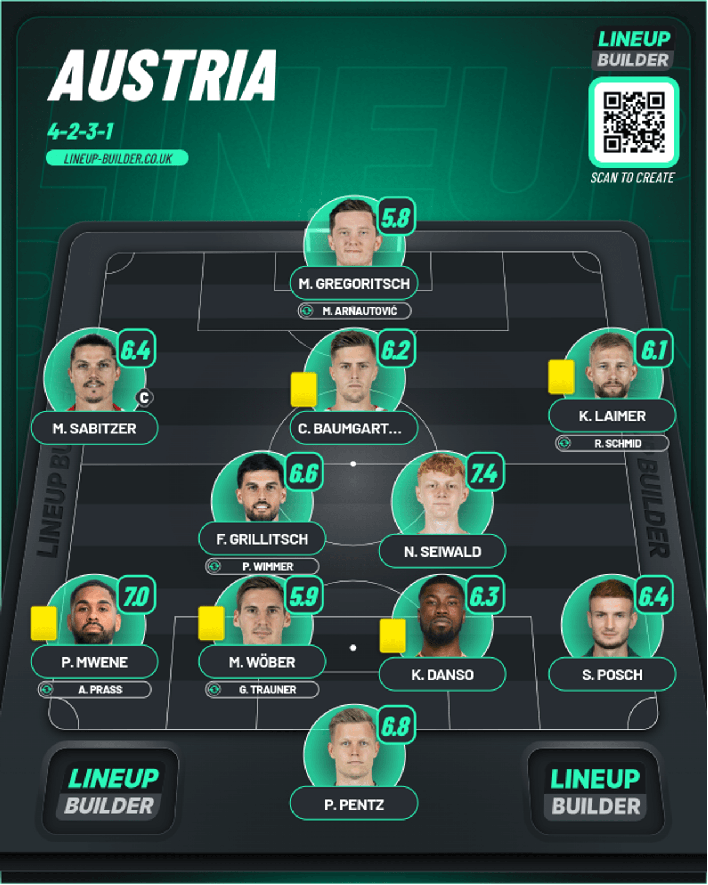

Day 4
Table of Contents
Day 4
Austria v France
France stand tall. Never wavering Austria. Are France a glorified England? Huge HUGE kudos to Austria for going toe to toe with one of the best national teams and heavy favorites and only conceded once and that was really unlucky as we got the first own goal of this tournament. Austria worked so hard in this match and had a few what if moments where they could have had a famous goal but the referee being too card happy and also making a few wrong calls ruined this great match in all honesty. Let’s get into it.
1st Half
We start first at minute 7 where Mbappé is sent through from the left, and he has a clear shot at goal but Pentz was equal to it, parrying it into the side netting. Then came controversy. In minute 35, first we have a really solid chance from Austria where Gregoritsch got the ball on the left and put in a really great cross which found Sabitzer who cushioned it beautifully for Baumgartner but Maignan rushed out forward quickly to deny him. It was an amazing save, but the controversy was after that. On replay, there was no evidence to suggest the ball struck Baumgartner after Maignan saved it so it typically should have been a corner, but the referee instead gave a goal kick. It was a weird one, but as far as I know I don’t think VAR is used in these kinds of scenarios, so that was a shame. A few minutes pass and Mbappé came down the right-hand side and put a cross in, and it was deflected in by Wober. It was a horrible miscommunication where the CB’s were fairly narrow which was really unlucky and France took the lead.
2nd Half
We see a bit of a pattern here, and I’m thinking back to the England v Serbia match which we just saw where England scored and sat back absorbing the pressure. Mbappé absolutely botched a one on one he’s usually score in his sleep after he managed to beat Wober for pace, and he decided to bend the ball wide of the right side post with only the keeper to beat. There was another poor moment from the referee where from a free kick Mbappé caught the shoulder of Danso with his nose(Which isn’t a good part of your body to catch someone’s shoulder) and his nose was broken as a result. On inspection after the game he is cleared to wear a mask if he does play the next match. There is only one clear answer on what mask for him to wear: Donatello from Teenage Mutant Ninja Turtles 😂😂. In all seriousness, I hope he gets better from it. There was another hit as well for Griezmann, who hit the advertising board from the challenge by Wober and he had to nurse a cut to the head. Mbappé was carded because for some bizarre reason Austria were allowed a sub but France weren’t so Mbappé decides to go back on the pitch before sitting down and was weridly carded for this. It was the REF who made this mistake in the first place 😑. There was another chance to finally kill the game off when Kolo Muani got to the right byline and crossed it in for Giroud but Danso got a slight touch which left him kicking air sadly. And it ended as it was. I am confused about how France deal with games now because this was very similar to how they dealt with England. In simple terms it seems that they are a version of England under Southgate. The only difference here is they have way too much individual quality to lose. I feel bad because they have the quality to play some class ball. Both England AND France. Anyways, win is a win. 3 points. Keep it moving.
Player of the Match - N’Golo Kanté
A long long time ago in a galaxy far far away we got this quote:
“70% of the Earth is covered by water and the rest is covered by N’Golo Kanté”
Today was just another example of that vintage Kanté that I’ve always loved. The only shame is that he’s become too injury prone for top European club football, but on the international stage at least he’s showing everyone else why he got this quote for himself. He absolutely ran that midfield and never let ANY Austrian player have a moment’s peace on the ball WHENEVER they attacked. That midfield of Kanté, Rabiot and Griezmann is an absolute god-tier workhorse midfield and Kanté is at the heart of it once again. I feel bad for the likes of Tchouameni and Camavinga who deserve a start on form.
Lineups
- Ratings from Fotmob
Austria

France
Turkey v Georgia
A fantastic game for the neutral. Only bangers from Turkey. Game of the Tournament so far. This was head and shoulders above the game of the tournament because it had so much from beginning to end. I loved that both teams really went for it and Georgia also didn’t sit back and really went for it till the end until Turkey threw the final dagger to end the game. Let’s hope I do it justice.
1st Half
We start off quickly from Turkey first where Ayhan hit the ball well down low, but it hits the post and rebounds all the way to the right side. This domination kept going, and the breakthrough did come in minute 25 where Kadioglu puts in a great floated cross which was cleared by the defense, but it only went as far as Muldur who timed a sweet volley right in the top right corner. Mamardashvili ain’t getting near that. We did get a second from Yildiz after just 2 minutes after Guler played a great ball across the goal, but it was swiftly ruled out for offside after Yildiz was offside by the front of his foot. We’d get a historic moment after that as in minute 32 as Georgia built up steadily from the right and Mikautadze puts the ball in to score Georgia’s first goal in their first ever Euros, and it was an equalizer. It was deserved too because Georgia and Turkey were going at it on both ends in terms of chances. There was a chance for Georgia to actually go ahead, but the recent scorer pulled it agonisingly wide.
2nd Half
We start with Turkey on the frontfoot again in minute 47 where Muldur has a chance to double his tally from a ball by Yilmaz, but he seemed to be unaware of it at all. Great cheers. Need I remind you you’re only at 1-1 😅😅. The minutes keep ticking on, and we come to minute 63 where Kvaratskhelia is given the ball from the lef, butt his first touch was a huge stretc, andd he couldn’t connect. It felt like I hardly saw him all gam, and I’m a little peeved he couldn’t score for his country but nevermind. We didn’t have to wait for another goal to come in becuase almost 2 minutes later, we see an absolute beauty from Arda Guler where he got the ball outside the box and just calmly curls his shot all the way to the top left corner. It seemed he did the very same kind of goal against Wales in qualifying, which is a crazy bit of coincidence. But it wasn’t all smooth sailing because at around minute 71 they almost messed up their lead when the Georgia player managed to play a good one two and lifted the ball brilliantly past the defender, but he only found the crossbar before it was cleared, unfortunatelyy. Georgia gave it everything trying to get the ball to go in and there was so many close calls but the final dagger arrived after Mamardashvili ran up for a freekick first and the ball was saved by the keeper but the rebound was hit by the Georgia player but it was cleared off the line for a corner. The resultant corner was punched out and it was fed to Akturkoglu who had acres of free space and an empty net to aim at and he made no mistake to finally put the game to bed and break Georgia hearts. Both these teams gave it everything and they can be proud of what they’ve achived for sure.
Player of the Match - Arda Guler
What a gem Real Madrid have at just 19. He turned down Barcelona and stayed at Madrid despite the reduction in gametime and managed to get European glory. And he was absolutely solid for Turkey here. All the talent here combined so well and it was really nice to see. It was what I wanted to see from Ukraine but we know what happened there. He was a constant creative threat and also showed he is a goal threat with the absolute corker that he scored today. Fully deserved.
Lineups
- Pulled from Fotmob